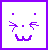

I released an EP "Look Ahead" which follows three kids who want to climb a mountain.
It is presented as an rpg with gorgeous art and character designs from my friend
portalpilled <3
+ it is up anywhere you would normally listen!! spotify, bandcamp soundcloud whatever. if u wanna please have a listen.
Here's something recent, if u wanna listen ;P
I also made a cute little game Cat.Box a little while ago.
It is a silly little high score based game which is very much based on an undertale fight mechanic.
Besides this I have also done some work on a bendy and the ink machine rpg remake Bendy:RPG in rpg maker, though it was never worked on after chapter 1. So its just. like 5 mins of the game.
Bendy:RPG in rpg maker, though it was never worked on after chapter 1. So its just. like 5 mins of the game.
Speaking of bendy, I released a mod that fixed several core issues with the game (BATIM) and ended up making into the official credits of the game,
so that is cool. I have a few other bendy mods that are fun if you wanna check em out!!